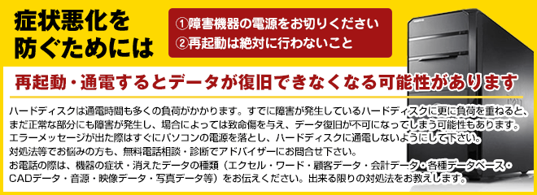

|
 |
 |
 |
PCが起動しない・・
大事なデータが入っているのに。
データを取りたいのに、
PCが起動しない・・・・・
待った！自分で対応する前にお電話を！
下手にさわるとデータが取り出せる可能性が
低くなります。
自分で触る前に必ず電話を！
もし自分で対応してしまうと・・・・・
磁気ディスクが傷つき、
データの読み取りが不可能になったり
大事なデータが上書きされて、
消えてしまうリスクがあります！
そのリスクを負って
自力での復旧を試みますか？？
大切なデータを取り返したい・復元したい
のであれば自分の判断で対応せず
プロにお任せください！
デジタル データ リカバリーなら
復旧率最高値が驚異の『95.2%』!
- ※他社で復旧できなかった案件が年間343件中205件の復旧成功を含む
- ※他社で復旧できなかった機器を含む
日本トップクラスの復旧技術にお任せ！

 |
 |
よくある質問･素朴な質問
- 復旧料金について
- お支払いについて
- 復旧期間について
- 書類の発行について
- 対応機器・メーカーについて
- 機器のお持ち込みについて
- 機器のご郵送について
- セキュリティ対策について
- 復旧後について
- その他